Aromaticity Detection
Which molecules are aromatic?
An aromatic molecule is one in which electrons
form a continuous pi cloud above and below the
circular arrangements of atoms.
In one representation these atoms are connected by
alternating single and double bonds.
Another representation is that of the circular pi bond, in which the
electron density is evenly distributed through a pi bond
above and below the ring.
The circulating pi electrons in a aromatic molecule generate significant
local magnetic fields that can be detected by NMR techniques.
Aromatic molecules typically display enhanced chemical stability, compared to similar non-aromatic molecules.
This commonly seen model of aromatic rings was developed by
Friedrich August Kekulé von Stradonitz and was first explained
in quantum mechanical terms by Linus Pauling in the 1930s.
In 1931, Erich Hückel devised the "4n+2" pi electron rule,
valid for planar molecules with a single ring.
Molecules having 4n+2 pi electrons (n >= 0) are expected to be aromatic.
Methods
Three types of transformation to aromatic representation
are implemented in Marvin, both are based on the Hückel's 4n+2 rule.
All transformation methods work only in structures which are in
non-aromatic representation.
If the molecules are in partially aromatic form
(containing any aromatic bond) the transformation method may fail.
None of the methods can recognize homoaromatic systems.
Process: locate the ring atoms in the molecule connected with
single and double bonds respectively, sum the number of pi-electrons and
if the Hückel's rule is valid, then the ring is aromatic.
Ring systems are also checked.
There are some exceptions:
- Where the double and single bonds are not sequential but
the ring is aromatic. In this case the atom between single bonds
has an orbit which takes part in the aromatic system.
(Relevant atoms: N, O, P, S, As and Se when they can donate a free
electron-pair to the aromatic system and B when it can donate a
molecule orbit without additional electron.)
- Rings with less than 5 members are not aromatic.
The method is the same as used by Daylight.
Locate the ring atoms in the molecule connected with
single and double bonds respectively, sum the number of pi-electrons and
if Hückel's rule is valid, then the ring is aromatic.
Ring systems are also checked. The atoms at the generated ring system
may not form a continuous ring like in benzo[de]chromene
(SMILES: O1C=CC2=CC=CC3=CC=CC1=C23)
where all atoms of the molecule are in the ring system generated from the
three 6 membered ring.
There are some exceptions:
- Oxygen and sulfur can share a pair of pi-electrons.
- Nitrogen can also share a pair of pi-electrons, if it has three ligands,
otherwise the sp2 nitrogen shares just one electron (as in pyridine).
- An exocyclic double bond to an electronegative atom takes out
one shared pi-electron from the cycle, as in 2-pyridone or coumarin.
The following ring systems are interpreted as aromatic:
- Five-membered rings such as the structures shown below:
(Where: A = any atom except hydrogen, Q = any atom except H or C)
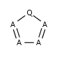
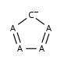
- Six-membered rings that can be drawn as alternating single and double bonds:
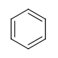
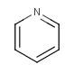
 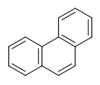
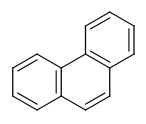
- Perimeter bonds in azulenes:
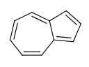
This type of aromatization checks 5-membered rings with bond pattern similar to
pyrrole and having A, AH, Q, QH, atom list (with ambiguous atom types)
or not list at the N position (with the two single bonds).
In that particular ring, the bonds are replaced by "single or aromatic" and "double or aromatic" bonds.
In case of 5-membered ring fusion with aromatic rings, the aromatic ring is aromatized first.
Examples:
| Molecule in aliphatic form |
Query aromatization |
 |
 |
| 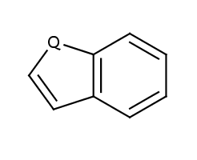 |
 |
| 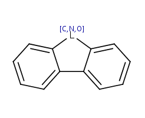 |
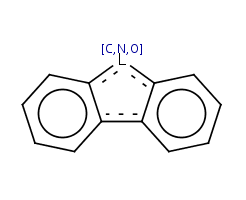 |
Differences between the Basic and General methods
The two method approach the question differently.
The general method tries to incorporate mesomeric,
tautomeric rearrangement, as in 2-pyridone, while the basic method does not.
In the basic method the external double bond breaks the formation of
aromatic ring.
The 2-pirydone is aromatic due to its mesomeric rearrangement:

The following molecules will give different results depending upon the method applied.
| Molecule in aliphatic form |
Basic aromatization |
General aromatization |
| IUPAC name: pyridin-2(1H)-one |
 |
|
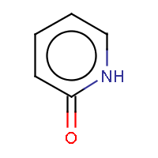 |
| IUPAC name: 2-thioxo-2,3-dihydropyrimidin-4(1H)-one |
| 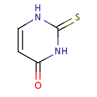 |
|
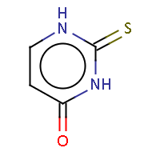 |
| IUPAC name: 2,4-dihydro-3H-1,2,4-triazol-3-thione |
 |
|
 |
| IUPAC name: 9H-xanthen-9-one |
| 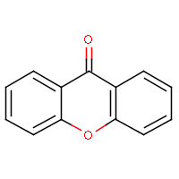 |
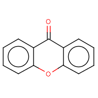 |
 |
| IUPAC name: 5-thioxo-1,2,4-triazolidin-3-one |
 |
|
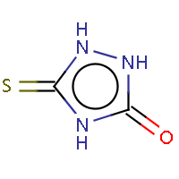 |
| IUPAC name: imidazo[1,5-a]pyridine-3(2H)-thione |
 |
|
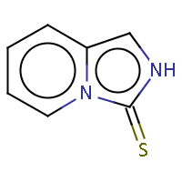 |
A query structure which defines one or more molecules with atom lists or
query atoms in one query structure
is converted to aromatic form if any of the defined structures
can be aromatized.
Link nodes, R-atoms and query bonds are not aromatized. If these features are
used, the use of single/aromatic or double/aromatic bond types is
recommended for each of the ring bonds in order to ensure matching to
aromatic systems.
| Query structure |
Aromatized |
 |
|
 |
|
 |
|
 |
|
 |
|
| 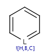 |
|
| 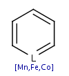 |
 |
Structures with query bonds are aromatized only in
General aromaticity detection mode.
Query structures with single_or_aromatic, double_or_aromatic or ANY bond
are aromatized if
the ring or ring system containing the query bond can be aromatized supposing
the query bond as aromatic. In this case the single and double bonds are
converted to single_or_aromatic and double_or_aromatic bonds respectively.
Structures with query bonds may contain atoms with improper valence due to
mixed aromatic-Kekule representation. These structures are accepted and
aromatized as they are just an incomplete representation of an otherwise
aromatic ring.
| Query structure |
Aromatized form |
![[#6]1~[#6]C=CC=C1](21.png) |
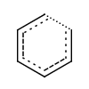 |
| 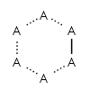 |
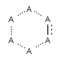 |
| 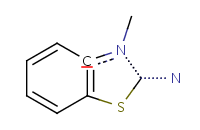 |
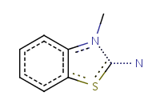 |
 |
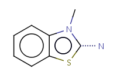 |
Aromatization error detection
Possible aromatization errors may be detected with the use of Structure Checker.
Guide to Aromaticity Error Checker.
Dearomatization
The general dearomatization method works as follows:
- Locate the aromatic electron fog.
- Locate special bonds, that should be single
(e.g. all the bonds around a trivalent nitrogen should be single).
- Place alternating single and double bonds instead of aromatic ones.
- This method does not check by default if Hückel's rule is valid.
Molconvert has options, that check
the validity of Hückel's rule:
- "huckel": checks the validity of Hückel's rule, if not valid
dearomatization isn't carried out, but no error message is sent.
- "huckel_ex": if Hückel's rule is not valid, the program terminates with an
error message.
References